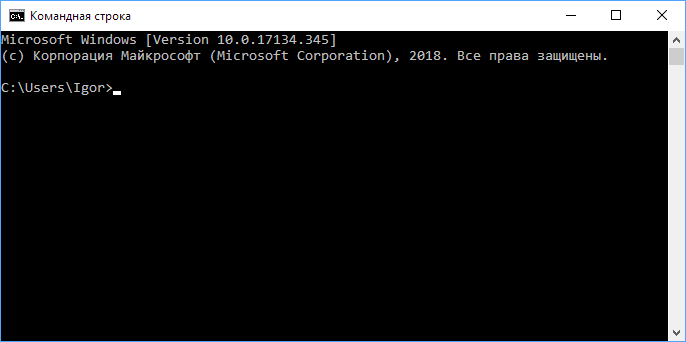

Содержание
Esptool для ESP8266
Утилита Esptool поможет считать и записать на платформу с чипом ESP8266EX прошивку в формате .bin.
Подготовка железа
Подключите управляющую платформу в режиме прошивки.
Установка ПО
- Скачайте и установите последнюю версию интерпретатора с официального сайта Python.При установке поставьте галочку в пункте "Add python.exe to PTH".
- Зайдите в командную строку: Пуск Выполнить cmd :
- Проверьте установленную версию Python. Введите в командной строке:
python --version
В ответ консоль выдаст строку с версией Python.
- Установите через менеджер пакетов pip утилиту esptool.
pip install esptool
- Узнайте установленную версию Esptool.
esptool.py version
В ответ командная строка выдаст ответ с текущей версией утилиты.Это значит, что утилита установилась и можно переходить к чтению или записи прошивки.
Чтение прошивки
- Для чтение прошивки необходимо вбить в консоль строку с определёнными параметрами. В зависимости от модуля и других факторов параметры команды отличаются. Рассмотрим на примере строки:
esptool.py --port COM19 read_flash 0x00000 0x100000 esp8266-backup.bin
- esptool.py — запуск утилиты;
- –port COM19 — номер COM-порта устройства. Узнайте ваш номер в диспетчере задач;
- read_flash — команда считывания данных из флэш-памяти;
- 0x00000 — адрес начала считывания флэш-памяти;
- 0x10000 — адрес конца считывания флэш-памяти;
- esp8266-backup.bin — имя файла для считываемой прошивки.
- Со строкой разобрались. Пора считывать.
Платформа уже должна быть в режиме прошивки.
В ответ начнётся считывание прошивки с модуля с индикацией состояния в консоле.
- Дождитесь окончания прошивки.
- Файл прошивки вы найдёте в директории из которой работали в командной строке. Теперь можно прошивать модули на чипе ESP8266 любой кастомной прошивкой.
Для возврата к заводской прошивки воспользуйтесь утилитой esptool.